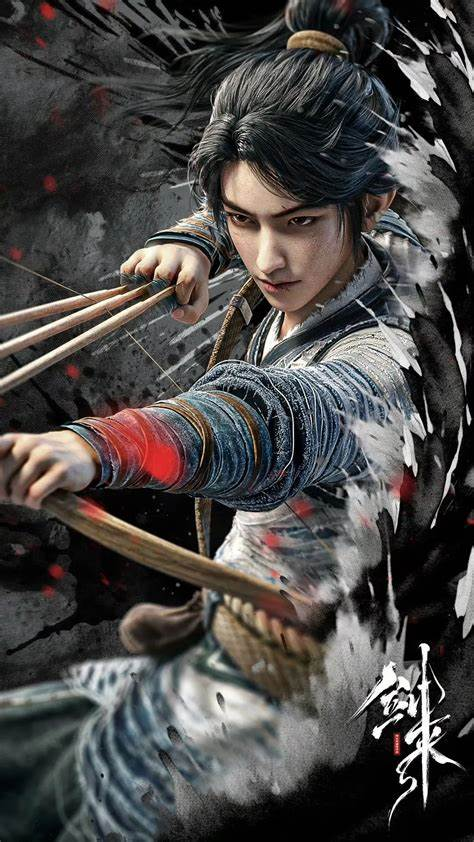
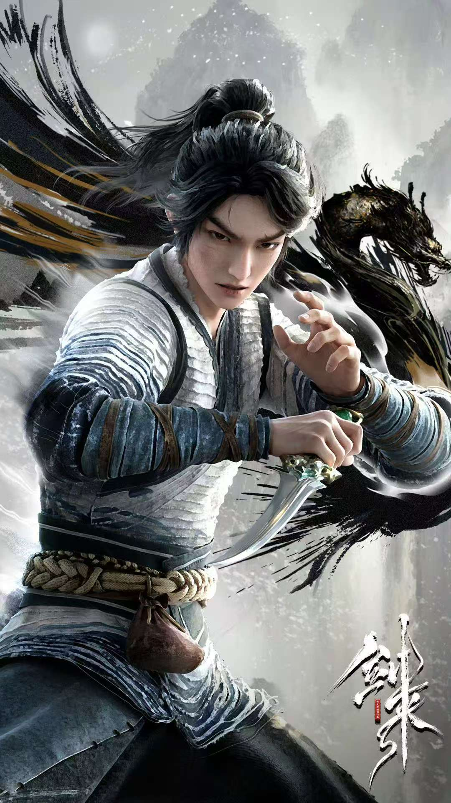

小说荣获第四届橙瓜网络文学奖的十大作品、百强作品以及最具潜力十大动漫IP等称号. 获得第二届泛华文网络文学“金键盘”奖的最佳故事创意奖. 在纵横中文网总点击量已超过3.27亿次，总发行超240万册，总码洋1.5亿元，总产品数超60种. 喜马拉雅有声书播放量超27亿. 抖音话题#剑来#的总播放量已超173亿次.
剧情介绍
《剑来》的故事围绕小镇少年陈平安展开。陈平安生活在一个看似平凡却暗藏玄机的小镇，

父母早亡的他受尽苦难。小镇被“大骊”王朝盯上，打破了原有的平静。随着各方势力的角逐，陈平安被迫离开小镇。 离开小镇后，陈平安踏上了修行之路。他一边在江湖中闯荡，结交了许多志同道合的朋友，如宁姚、左右、崔东山等。一边面对各种强大的敌人和复杂的势力。在剑气长城，他参与对抗妖族入侵的惨烈战争，守护人间。 在修行方面，陈平安资质平凡但毅力非凡。他师从文圣等多位先生，学习儒、释、道等百家学问，不断提升自己的境界。他有两把剑“笼中雀”和“井中月”，剑技也在实战和修炼中逐渐精湛。 小说的世界中有着三教百家的势力划分，各方势力为了大道、气运等利益相互竞争。同时，世界背后还有着天庭共主时代的旧秩序残留与新崛起势力的博弈。陈平安就在这样复杂的环境中，坚守自己的道理，寻找“一”，在广袤的天地间历经磨难而前行。观影心得
初读《剑来》，便被其宏大而细腻的世界观所吸引。烽火戏诸侯笔下的这个仙侠世界，

并非简单的武力堆砌，而是融入了儒、释、道等诸多传统思想，使之层次丰富且充满韵味。从剑气长城抵御妖族的壮烈，到三教百家的明争暗斗，每一处场景都勾勒出世界的复杂与真实。 主角陈平安的成长是这部小说的核心看点。他出身贫寒，父母双亡，却凭借着顽强的意志和内心坚守的善良与正义，在江湖中摸爬滚打。他的每一次抉择，无论是面对生死危机还是道德困境，都展现出人性的光辉与挣扎。他从懵懂少年逐渐成长为能肩负起一方责任的豪杰，这一过程充满了艰辛与磨砺，也让读者深刻感受到成长的重量。 书中的人物群像更是栩栩如生。无论是洒脱不羁的剑修阿良，还是聪慧坚韧的宁姚，每一个配角都有着自己独特的故事和性格魅力，他们与陈平安的羁绊或深或浅，却共同编织出一个鲜活的江湖。这些人物之间的情感纠葛、理念碰撞，让整个故事充满了烟火气与温情。 《剑来》不仅仅是一部仙侠小说，更是一部探讨人性、道德、理想与现实的佳作。它让我们在跟随主角冒险的同时，也不禁思考自己内心的“道”，给人以心灵的启迪与慰藉，是一部值得反复品味的经典之作。